Bayesian Analysis for a Logistic Regression Model
Statistical inferences are usually based on maximum likelihood estimation (MLE). MLE chooses the parameters that maximize the likelihood of the data, and is intuitively appealing. In MLE, parameters are assumed to be unknown but fixed, and are estimated with some confidence. In Bayesian statistics, the uncertainty about the unknown parameters is quantified using probability so that the unknown parameters are regarded as random variables.
This demo illustrates the use of the Statistics Toolbox™ and the slicesample function to make Bayesian inferences for a logistic regression model.
Contents
Bayesian Inference
Bayesian inference is the process of analyzing statistical models with the incorporation of prior knowledge about the model or model parameters. The root of a such inference is Bayes' theorem:
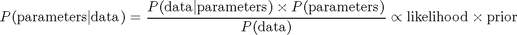
For example, suppose we have normal observations
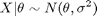
where sigma is known and the prior distribution for theta is
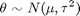
In this formula mu and tau, sometimes known as hyperparameters, are also known. If we observe n samples of X, we can obtain the posterior distribution for theta as
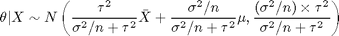
The following graph shows the prior, likelihood, and posterior for theta.
rand('state',0); randn('state',0); n = 20; sigma = 50; x = normrnd(10,sigma,n,1); mu = 30; tau = 20; theta = linspace(-40, 100, 500); y1 = normpdf(mean(x),theta,sigma/sqrt(n)); y2 = normpdf(theta,mu,tau); postMean = tau^2*mean(x)/(tau^2+sigma^2/n) + sigma^2*mu/n/(tau^2+sigma^2/n); postSD = sqrt(tau^2*sigma^2/n/(tau^2+sigma^2/n)); y3 = normpdf(theta, postMean,postSD); plot(theta,y1,'-', theta,y2,'--', theta,y3,'-.') legend('Likelihood','Prior','Posterior') xlabel('\theta')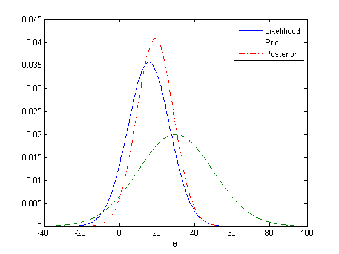
Car Experiment Data
In some simple problems such as the previous normal mean inference example, it is easy to figure out the posterior distribution in a closed form. But in general problems that involve non-conjugate priors, the posterior distributions are difficult or impossible to compute analytically. We will consider logistic regression as an example. This example involves an experiment to help model the proportion of cars of various weights that fail a mileage test. The data include observations of weight, number of cars tested, and number failed. We will work with a transformed version of the weights to reduce the correlation in our estimates of the regression parameters.
% A set of car weights weight = [2100 2300 2500 2700 2900 3100 3300 3500 3700 3900 4100 4300]'; weight = (weight-2800)/1000; % recenter and rescale % The number of cars tested at each weight total = [48 42 31 34 31 21 23 23 21 16 17 21]'; % The number of cars that have poor mpg performances at each weight poor = [1 2 0 3 8 8 14 17 19 15 17 21]';
Logistic Regression Model
Logistic regression, a special case of a generalized linear model, is appropriate for these data since the response variable is binomial. The logistic regression model can be written as:
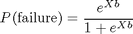
where X is the design matrix and b is the vector containing the model parameters. In MATLAB®, we can write this equation as:
logitp = @(b,x) exp(b(1)+b(2).*x)./(1+exp(b(1)+b(2).*x));
If you have some prior knowledge or some non-informative priors are available, you could specify the prior probability distributions for the model parameters. For example, in this demo, we use normal priors for the intercept b1 and slope b2, i.e.
prior1 = @(b1) normpdf(b1,0,20); % prior for intercept prior2 = @(b2) normpdf(b2,0,20); % prior for slope
By Bayes' theorem, the joint posterior distribution of the model parameters is proportional to the product of the likelihood and priors.
post = @(b) prod(binopdf(poor,total,logitp(b,weight))) ... % likelihood * prior1(b(1)) * prior2(b(2)); % priors
Note that the normalizing constant for the posterior in this model is analytically intractable. However, even without knowing the normalizing constant, you can visualize the posterior distribution, if you know the approximate range of the model parameters.
b1 = linspace(-2.5, -1, 50); b2 = linspace(3, 5.5, 50); simpost = zeros(50,50); for i = 1:length(b1) for j = 1:length(b2) simpost(i,j) = post([b1(i), b2(j)]); end; end; mesh(b2,b1,simpost) xlabel('Slope') ylabel('Intercept') zlabel('Posterior density') view(-110,30)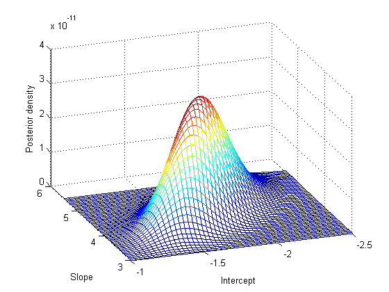
This posterior is elongated along a diagonal in the parameter space, indicating that, after we look at the data, we believe that the parameters are correlated. This is interesting, since before we collected any data we assumed they were independent. The correlation comes from combining our prior distribution with the likelihood function.
Slice Sampling
Monte Carlo methods are often used in Bayesian data analysis to summarize the posterior distribution. The idea is that, even if you cannot compute the posterior distribution analytically, you can generate a random sample from the distribution and use these random values to estimate the posterior distribution or derived statistics such as the posterior mean, median, standard deviation, etc. Slice sampling is an algorithm designed to sample from a distribution with an arbitrary density function, known only up to a constant of proportionality -- exactly what is needed for sampling from a complicated posterior distribution whose normalization constant is unknown. The algorithm does not generate independent samples, but rather a Markovian sequence whose stationary distribution is the target distribution. Thus, the slice sampler is a Markov Chain Monte Carlo (MCMC) algorithm. However, it differs from other well-known MCMC algorithms because only the scaled posterior need be specified -- no proposal or marginal distributions are needed.
This example shows how to use the slice sampler as part of a Bayesian analysis of the mileage test logistic regression model, including generating a random sample from the posterior distribution for the model parameters, analyzing the output of the sampler, and making inferences about the model parameters. The first step is to generate a random sample.
initial = [1 1]; nsamples = 1000; trace = slicesample(initial,nsamples,'pdf',post,'width',[20 2]);
Analysis of Sampler Output
After obtaining a random sample from the slice sampler, it is important to investigate issues such as convergence and mixing, to determine whether the sample can reasonably be treated as a set of random realizations from the target posterior distribution. Looking at marginal trace plots is the simplest way to examine the output.
subplot(2,1,1) plot(trace(:,1)) ylabel('Intercept'); subplot(2,1,2) plot(trace(:,2)) ylabel('Slope'); xlabel('Sample Number');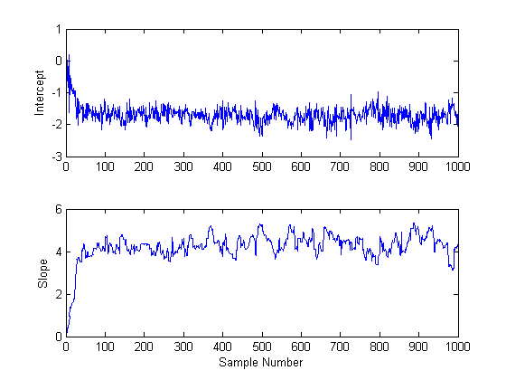
It is apparent from these plots is that the effects of the parameter starting values take a while to disappear (perhaps fifty or so samples) before the process begins to look stationary.
It is also be helpful in checking for convergence to use a moving window to compute statistics such as the sample mean, median, or standard deviation for the sample. This produces a smoother plot than the raw sample traces, and can make it easier to identify and understand any non-stationarity.
movavg = filter( (1/50)*ones(50,1), 1, trace); subplot(2,1,1) plot(movavg(:,1)) xlabel('Number of samples') ylabel('Means of the intercept'); subplot(2,1,2) plot(movavg(:,2)) xlabel('Number of samples') ylabel('Means of the slope');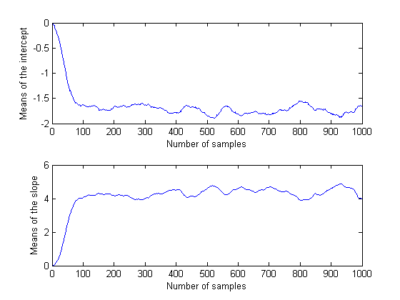
Because these are moving averages over a window of 50 iterations, the first 50 values are not comparable to the rest of the plot. However, the remainder of each plot seems to confirm that the parameter posterior means have converged to stationarity after 100 or so iterations. It is also apparent that the two parameters are correlated with each other, in agreement with the earlier plot of the posterior density.
Since the settling-in period represents samples that can not reasonably be treated as random realizations from the target distribution, it's probably advisable not to use the first 50 or so values at the beginning of the slice sampler's output. You could just delete those rows of the output, however, it's also possible to specify a "burn-in" period. This is convenient when a suitable burn-in length is already known, perhaps from previous runs.
trace = slicesample(initial,nsamples,'pdf',post, ... 'width',[20 2],'burnin',50); subplot(2,1,1) plot(trace(:,1)) ylabel('Intercept'); subplot(2,1,2) plot(trace(:,2)) ylabel('Slope');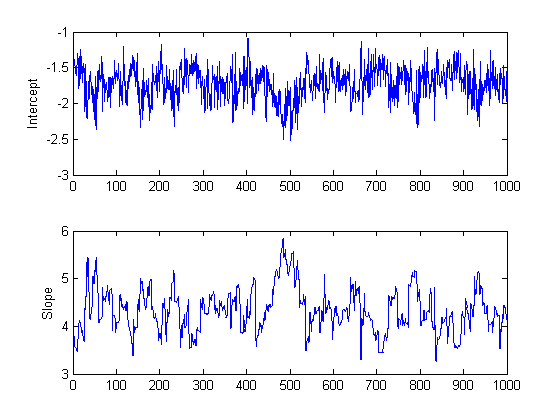
These trace plots do not seem to show any non-stationarity, indicating that the burn-in period has done its job.
However, there is a second aspect of the trace plots that should also be explored. While the trace for the intercept looks like high frequency noise, the trace for the slope appears to have a lower frequency component, indicating there autocorrelation between values at adjacent iterations. We could still compute the mean from this autocorrelated sample, but it is often convenient to reduce the storage requirements by removing redundancy in the sample. If this eliminated the autocorrelation, it would also allow us to treat this as a sample of independent values. For example, you can thin out the sample by keeping only every 10th value.
trace = slicesample(initial,nsamples,'pdf',post,'width',[20 2], ... 'burnin',50,'thin',10);
To check the effect of this thinning, it is useful to estimate the sample autocorrelation functions from the traces and use them to check if the samples mix rapidly.
F = fft(detrend(trace,'constant')); F = F .* conj(F); ACF = ifft(F); ACF = ACF(1:21,:); % Retain lags up to 20. ACF = real([ACF(1:21,1) ./ ACF(1,1) ... ACF(1:21,2) ./ ACF(1,2)]); % Normalize. bounds = sqrt(1/nsamples) * [2 ; -2]; % 95% CI for iid normal labs = {'Sample ACF for intercept','Sample ACF for slope' }; for i = 1:2 subplot(2,1,i) lineHandles = stem(0:20, ACF(:,i) , 'filled' , 'r-o'); set(lineHandles , 'MarkerSize' , 4) grid('on') xlabel('Lag') ylabel(labs{i}) hold('on') plot([0.5 0.5 ; 20 20] , [bounds([1 1]) bounds([2 2])] , '-b'); plot([0 20] , [0 0] , '-k'); hold('off') a = axis; axis([a(1:3) 1]); end

The autocorrelation values at the first lag are significant for the intercept parameter, and even more so for the slope parameter. We could repeat the sampling using a larger thinning parameter in order to reduce the correlation further. For the purposes of this demo, however, we'll continue to use the current sample.
Inference for the Model Parameters
As expected, a histogram of the sample mimics the plot of the posterior density.
subplot(1,1,1) hist3(trace,[25,25]); xlabel('Intercept') ylabel('Slope') zlabel('Posterior density') view(-110,30)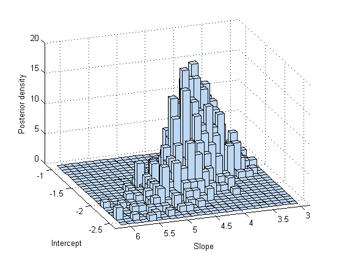
You can use a histogram or a kernel smoothing density estimate to summarize the marginal distribution properties of the posterior samples.
subplot(2,1,1) hist(trace(:,1)) xlabel('Intercept'); subplot(2,1,2) ksdensity(trace(:,2)) xlabel('Slope');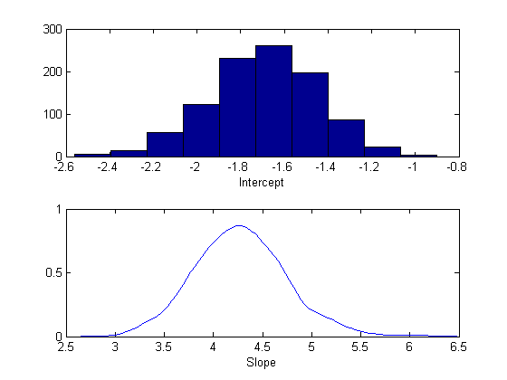
You could also compute descriptive statistics such as the posterior mean or percentiles from the random samples. To determine if the sample size is large enough to achieve a desired precision, it is helpful to monitor the desired statistic of the traces as a function of the number of samples.
csum = cumsum(trace); subplot(2,1,1) plot(csum(:,1)'./(1:nsamples)) xlabel('Number of samples') ylabel('Means of the intercept'); subplot(2,1,2) plot(csum(:,2)'./(1:nsamples)) xlabel('Number of samples') ylabel('Means of the slope');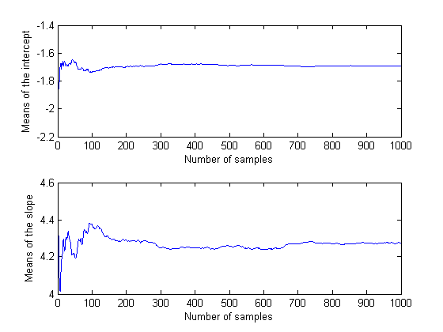
In this case, it appears that the sample size of 1000 is more than sufficient to give good precision for the posterior mean estimate.
bHat = mean(trace)
bHat = -1.6937 4.2764
Summary
The Statistics Toolbox offers a variety of functions that allow you to specify likelihoods and priors easily. They can be combined to derive a posterior distribution. The slicesample function enables you to carry out Bayesian analysis in MATLAB using Markov Chain Monte Carlo simulation. It can be used even in problems with posterior distributions that are difficult to sample from using standard random number generators.